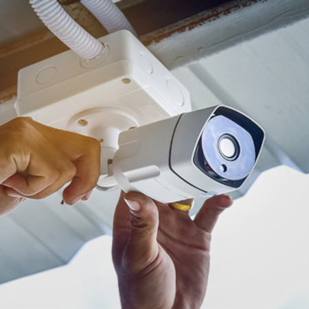
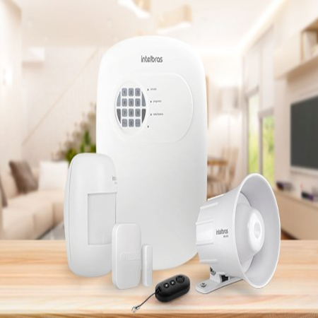

Serviços

A segurança eletrônica refere-se ao uso de sistemas eletrônicos avançados para proteger propriedades, pessoas e informações contra ameaças, invasões ou danos. Esses sistemas são projetados para fornecer monitoramento, detecção e resposta rápida a eventos de segurança. Embora a segurança pública seja uma responsabilidade do Estado, nem sempre é possível contar exclusivamente com as forças policiais e com a segurança primária para obter uma vida tranquila.
NOSSOS SERVIÇOS
Rastreamento Veicular
Segundo dados da Polícia, os índices de furto e roubo de veículos só aumentam. Por isso, é importante tomar medidas preventivas para proteger seu carro. O Rastreador Veicular permite verificar onde está o automóvel , sua velocidade, o trajeto percorrido e o tempo que permaneceu em determinado local. Com este serviço a MySee e o usuário sabe exatamente tudo o que está acontecendo com o seu veículo.
Fale ConoscoSistemas CFTV
Um bom sistema de câmeras de segurança se tornou essencial, principalmente na inibição de ações criminosas. A MySee possibilita que o usuário tenha acesso às imagens em tempo real de qualquer local do planeta, basta apenas que seu smartphone ou computador tenha acesso à rede de internet.
Fale ConoscoSistemas de Alarme
Os Sistemas de Alarme são um conjunto de sensores, centrais eletrônicas e softwares, integrados com o objetivo de proteger pessoas e bens patrimoniais contra condições e atos indesejáveis. A utilização desse sistema em residencias e comércio se tornou algo muito comum e frequente, com a principal finalidade de emitir alarmes em casos de eventos indesejáveis.
Fale ConoscoCerca Elétrica
O serviço de cerca elétrica permite um maior controle ao risco, pois protege 24 horas por dia. É uma das melhores opções para a segurança privada, levando em consideração o seu investimento relacionado à aquisição, manutenção e uso. A cerca elétrica é um equipamento valioso para a segurança de pessoas ou bens imobilizados.
Fale ConoscoConcertina
A Concertina Simples ou Cerca Concertina de é ideal para se utilizar na proteção de muros, perímetros ou alambrados .Se trata de uma lâmina de corte em espiral de alta resistência conformada junto com um arame galvanizado a fogo.
Fale ConoscoAutomação de Portão
A automatização de portão proporciona mais comodidade para seus usuários, pois não existe o contato manual, facilitando o dia a dia das pessoas.
Fale ConoscoCabeamento Estruturado
O cabeamento estruturado é uma forma de organizar e padronizar a estrutura de cabos em uma empresa, de modo a alcançar o máximo de produtividade e desempenho. É aproveitar melhor os recursos. Organiza a estrutura de internet, dados e voz, cuidando, portanto, das telecomunicações e da rede.
Fale ConoscoControle de Acesso
O controle de acesso desempenha um papel importante para identificar as pessoas presentes em uma determinada área controlada. O controle de acesso de pessoas em áreas restritas, como condomínios, empresas, centro de processamento de dados, entre outros, é feito através de equipamentos como portas eletrônicas, catracas, torniquetes e cancelas.
Fale ConoscoPorteiro Eletrónico
Sua função é evitar o contato direto do porteiro ou morador com a pessoa que estiver no portão, dessa forma evitando tentativas de roubos, assaltos ou qualquer crime em potencial.
Fale Conosco